Drom PDD helps drivers learn traffic rules and pass the theory exam.
Every future driver in Russia takes the same theory exam, and this is one of the biggest apps to prepare for it: over 10 million downloads, consistently at the top of Google Play’s education charts.
App Store Google Play WebMy Role and Responsibilities
Extensive experience collaborating in cross-functional teams with PMs, analysts, engineers, and QA.
- Redesigned the home screen of an app with over 10 million downloads, moving it from a fixed layout to a scrollable, modular one.
- Built dark mode into the design system: one color palette and one set of illustrations serving both themes.
- Adapted the mascot illustrations so the character survived the redesign and the dark theme.
- Used usage analytics to decide which learning actions stayed at the top of the new hierarchy.
- Animated UI states and the mascot with Lottie.
Home Screen Redesign
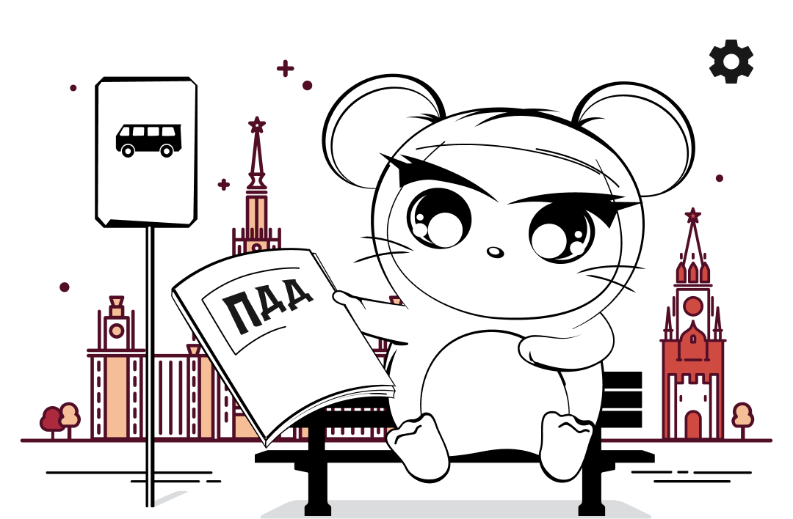
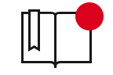
Topics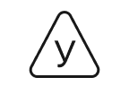
Rules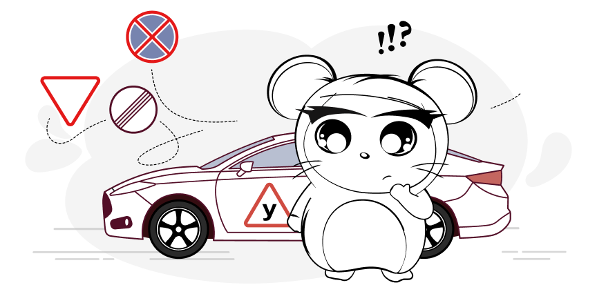
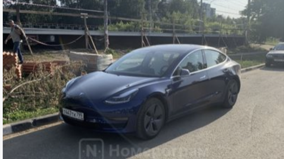
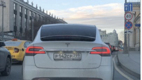
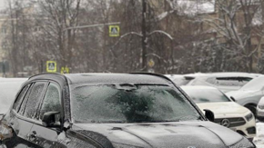
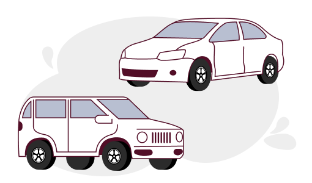
1,356 more carson Drom
Problem
The home screen didn’t scroll: every feature had to fit one static layout, and the technical implementation made even small changes costly to ship. On the app’s most visited screen there was almost no room for experiments.
The screen also carried a business job: the app needed to turn driving-school students into Drom Auto users, but the existing structure had no way to fit that scenario in.
Solution
My task was to update the home screen without breaking the experience people already knew. We kept the familiar visual language, including the mascot mouse, and brought the screen in line with the rest of the app.
I rebuilt the screen as a scrollable stack of modules, ordered by usage analytics: the most-used sections, Tickets and Exam, landed at the top.
The modular structure made it possible to add new blocks quickly and test their impact without reworking the whole screen. The first such block was a car feed from Drom that introduced users to Drom Auto.
Outcome
- Modular architecture turned the home screen into a platform for continuous experimentation
- The team shipped a new A/B test in almost every release, and adding new blocks no longer required reworking the whole screen
Paid Content: Real-Life Situations

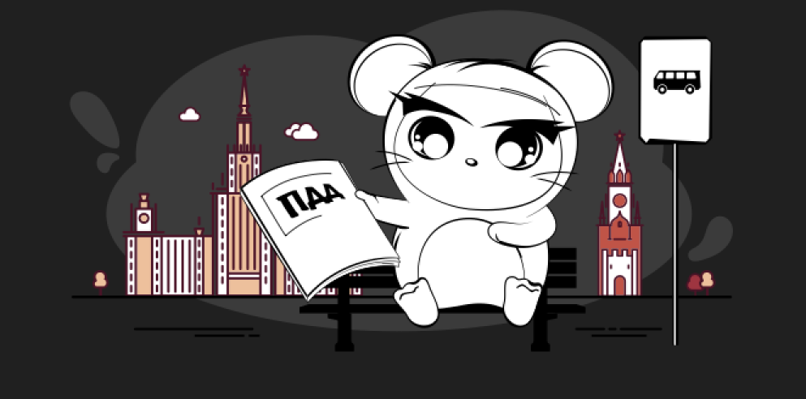
 Topics
Topics Marathon
Marathon Mistakes
Mistakes Favorites
Favorites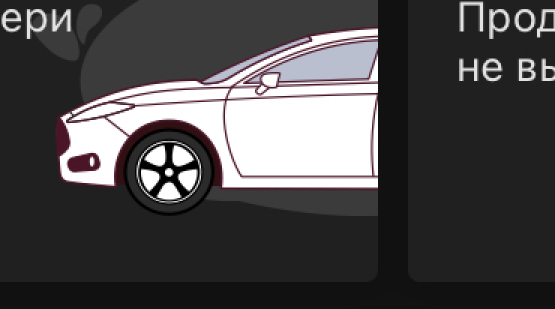
1,356 more carson Drom
Problem
Tickets help you learn the rules, but the real road tests whether you can apply them in practice. Users regularly ran into situations that weren’t covered in the tests, and the app needed an additional revenue source beyond ads — a reason users would be willing to pay.
Solution
I designed a paid module with real road situations and a breakdown of how the rules apply in practice. Thanks to the home screen’s modular architecture, the feature could be added without redesigning the whole page.
A full-width violet button became the entry point into the premium content. Violet is deliberately outside the app’s core blue-and-red palette, so the new paid module reads as a distinct value on a screen users see every day.
Outcome
- The paid feature appeared on the app’s most visited screen
- The module was added into the existing interface without changing the home screen’s structure — proof of the new modular architecture’s value
Dark Mode
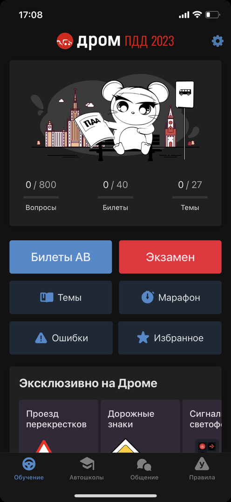
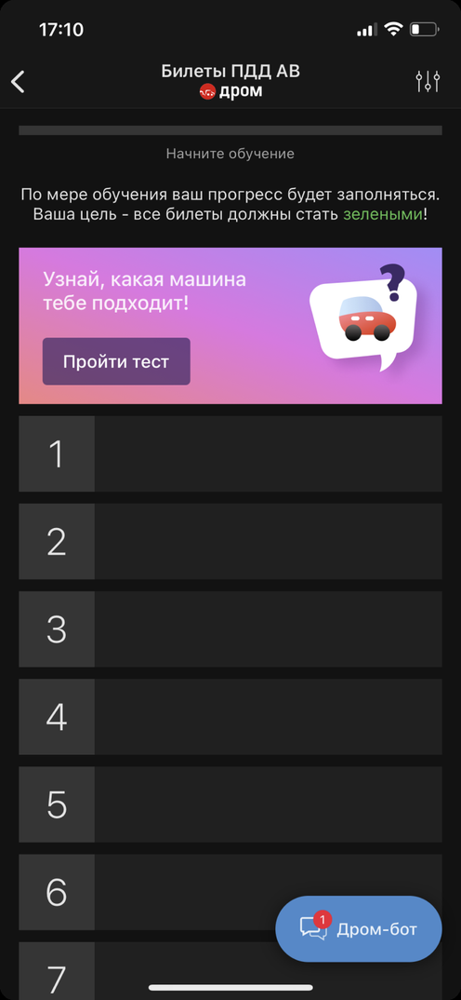
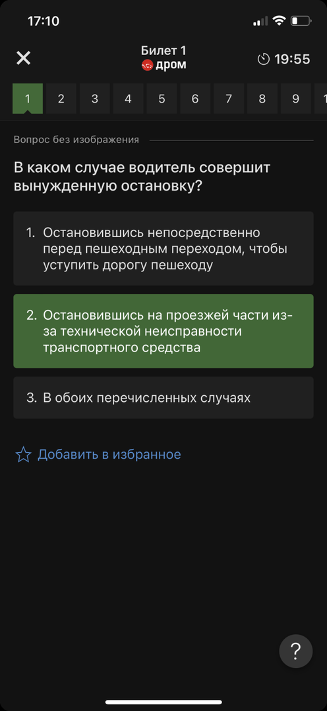
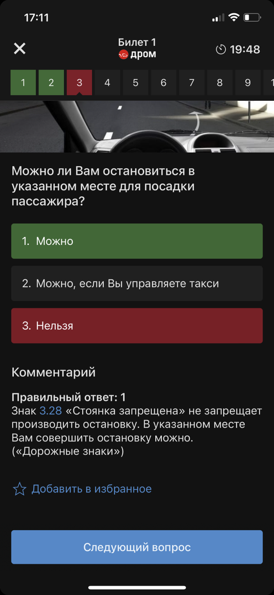
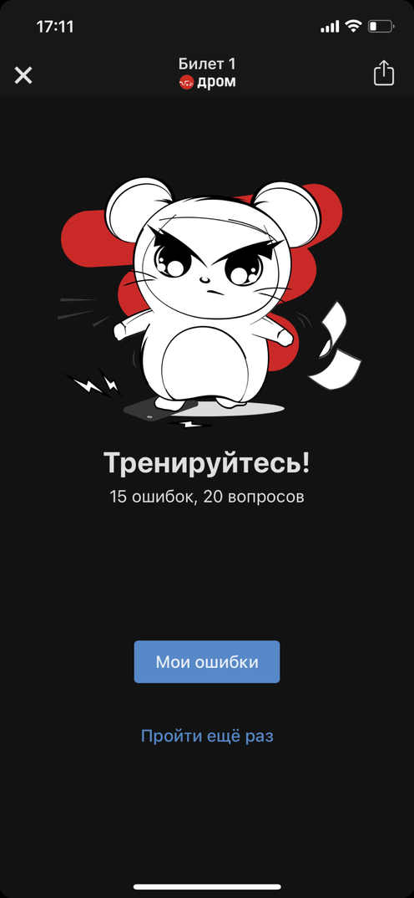
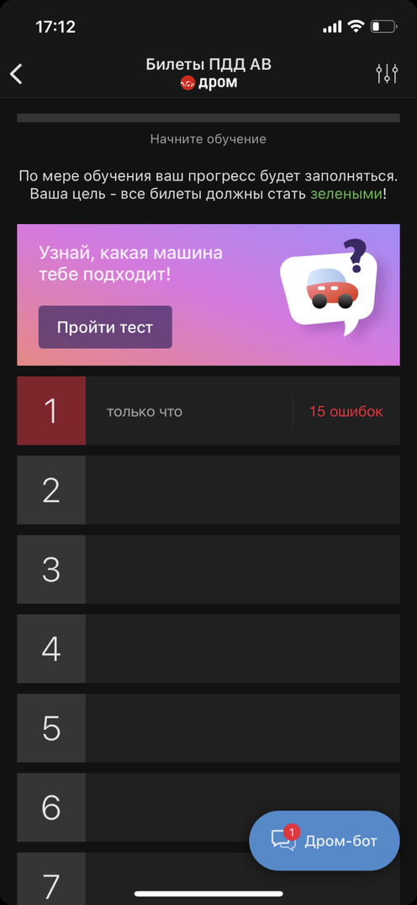
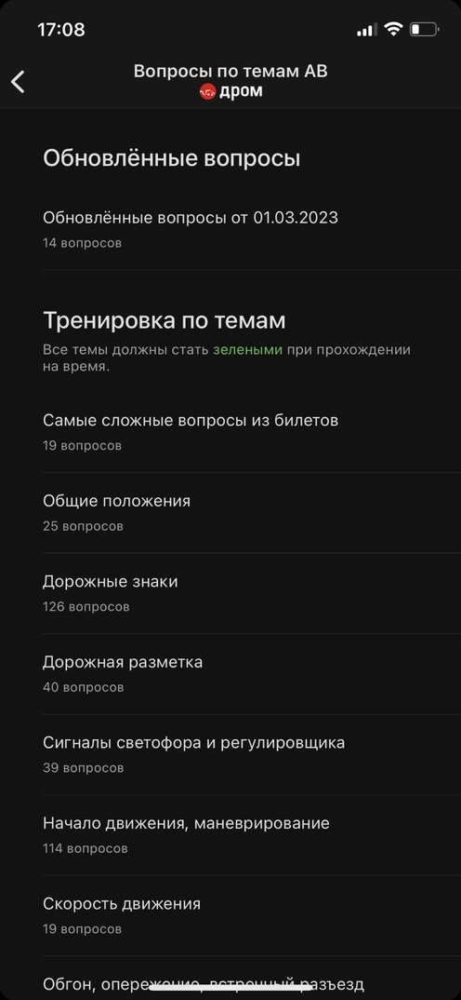
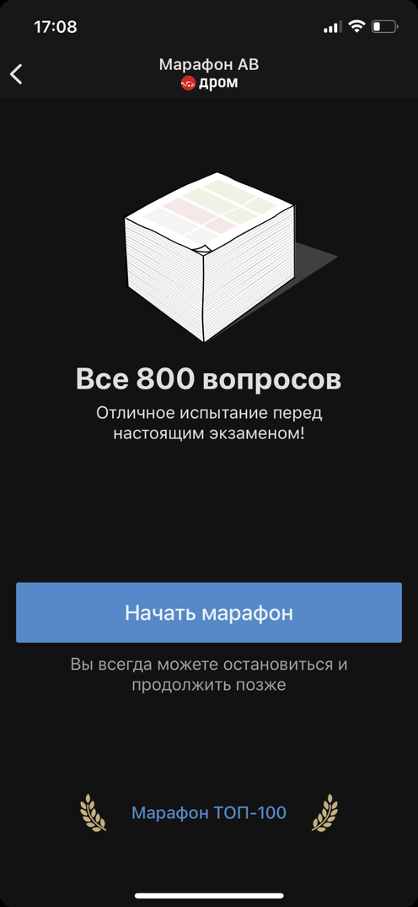
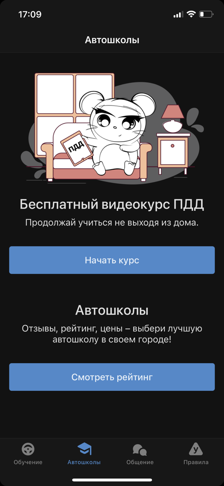
Problem
Users repeatedly requested dark mode through app reviews and support channels. For an app used daily over several weeks of exam preparation, a bright white interface became a real usability issue rather than a cosmetic preference.
The challenge was preserving the app’s visual identity: illustrations and Lottie animations were a core part of the experience, but none of the existing assets were designed for dark backgrounds.
Solution
I introduced dark mode at the design system level by creating a semantic color token structure that supports both light and dark themes from a single foundation. The new color system was designed with accessibility in mind, ensuring sufficient contrast and readability across both themes.
Illustrations and Lottie animations were adapted to work across both backgrounds while keeping a single asset set. A theme switcher gave users control over their preferred appearance.
This approach allowed existing screens — and all future features — to support dark mode without additional design effort.
Outcome
- Closed one of the most requested features from app reviews and support requests
- Dark mode became widely adopted, with 60% of monthly active users having dark mode active, including users following automatic system theme settings
- Maintained one asset set for both themes, eliminating duplicated illustration work
- Every new feature now ships with dark mode support by default, with no additional design cost